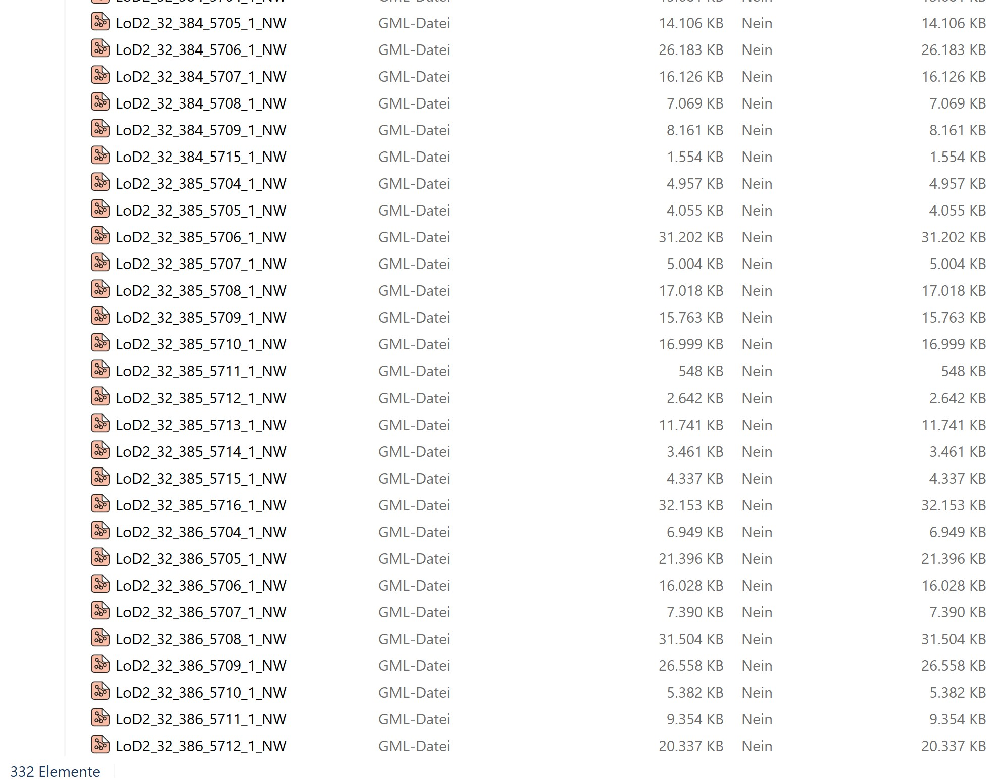

4. Data aquisition
3D Building data (CityGML)
Open the Geoportal NRW.
In the menu on the right side, you can select the are of interest (AOI).
Select “Aus Gebietslisten auswählen”.
In the menu bar on the top, select “Kreise” and then “Dortmund” –> The AOI is automatically drawn in the map.
Click on “Übernehmen”.
Choose your desired products (3D building data) by clicking the + symbol.
In the searchbar type CityGML and tick the box at “3D-Gebäudemodell LoD2 (CityGML) - Paketierung: Einzelkacheln”.
Click on “Übernehmen”.
The estimated file size for the city of Dortmund should be around 4.35 GB.
Click on “Zum Download” and then on “Alle herunterladen”.
Note
This will download a .zip Folder with 332 single tiles containing the 3D building data.
It should look something like this:

{kind=link}
LiDAR Data (Laz)
To download the LiDAR data you can proceed the same way as before:
Open the Geoportal NRW.
In the menu on the right side, you can select the are of interest (AOI).
Select “Aus Gebietslisten auswählen”.
In the menu bar on the top, select “Kreise” and then “Dortmund” –> The AOI is automatically drawn in the map.
Click on “Übernehmen”.
Choose your desired products (LiDAR data) by clicking the “+” symbol.
In the searchbar type “3dm” and tick the box at “3D-Messdaten Laserscanning (LAS) - Paketierung: Einzelkacheln”.
Click on “Übernehmen”.
The estimated file size for the city of Dortmund should be around 42.6 GB.
Click on “Zum Download” and then on “Alle herunterladen”.
Note
This will download a .zip Folder with 332 single tiles containing the LiDAR data.
It should look something like this:
[change picture]
Tree cadastre data (geojson)
Open the Geoportal of the city of Dortmund.
Navigate to the tab “Exporte”
Download the geojson file (not the shapefile because it is not complete).
Note
As the shapfile dataset only contains a limited number of trees, it is recommended to download the geojson file, which contains all public trees in Dortmund. At a later stage of this tutorial, the geojson dataset is converted into a shapefile.